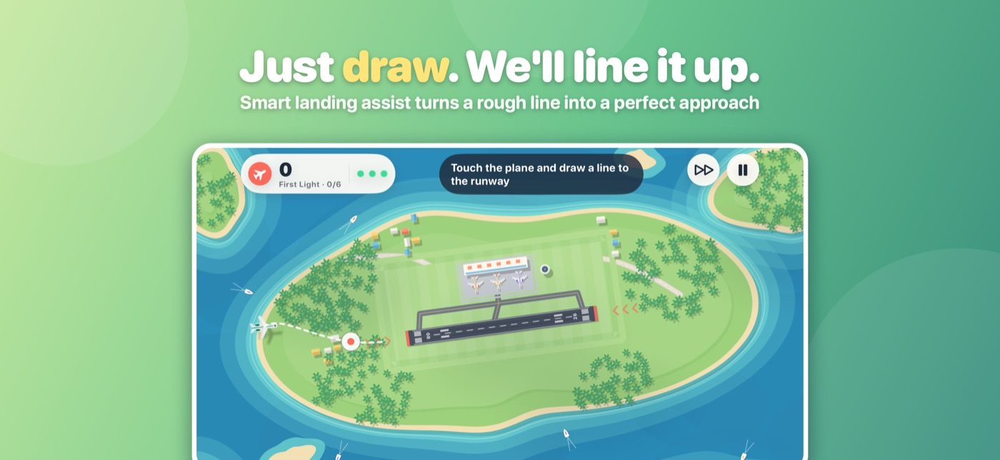
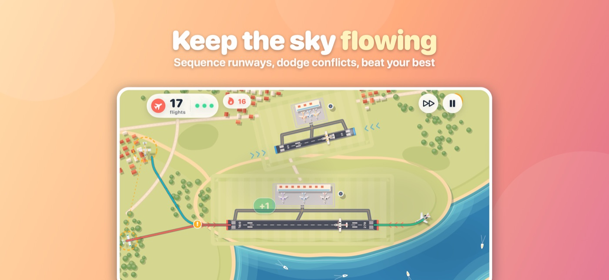
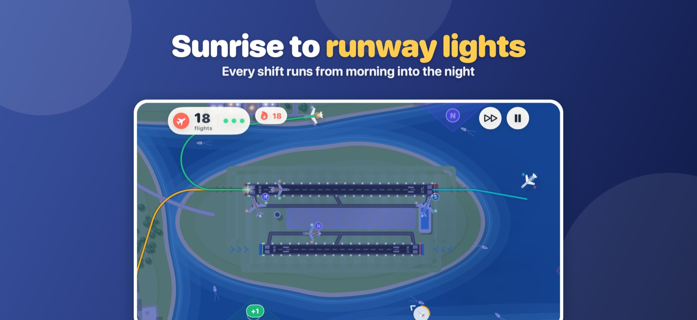
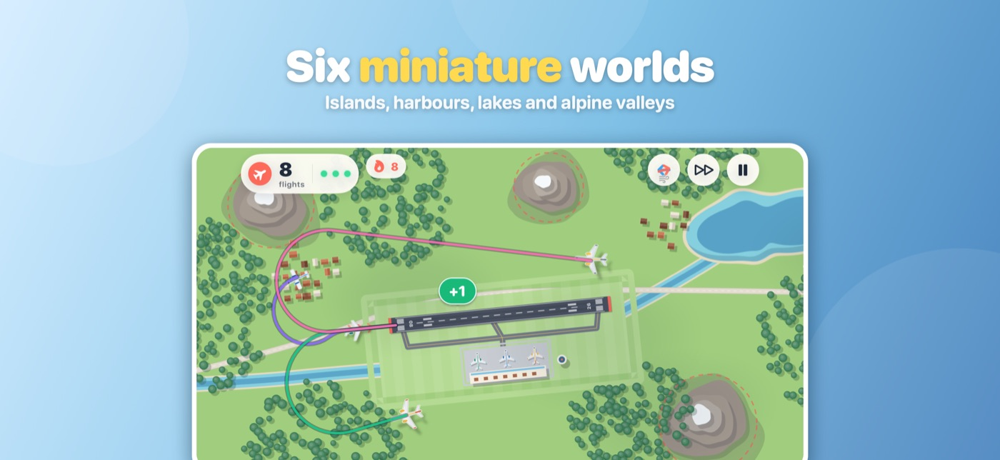

Draw, don't micromanage
Sketch a line and the plane flies exactly what you drew. Lines can cross; the game only warns you about real conflicts.
Easy to start, deep to master
Light aircraft to heavies and helicopters, crossing runways, wind shifts, Mayday emergencies and rare visitors for your Spotter's book.
Play your way
An 18-shift Logbook, 24 puzzles, Endless, a Daily Flight, a Weekly Challenge, and Relaxed mode where you can't lose.
Fair price, no tricks
Three airports and every mode free. One purchase unlocks everything, forever. No ads, no tracking, no energy timers.